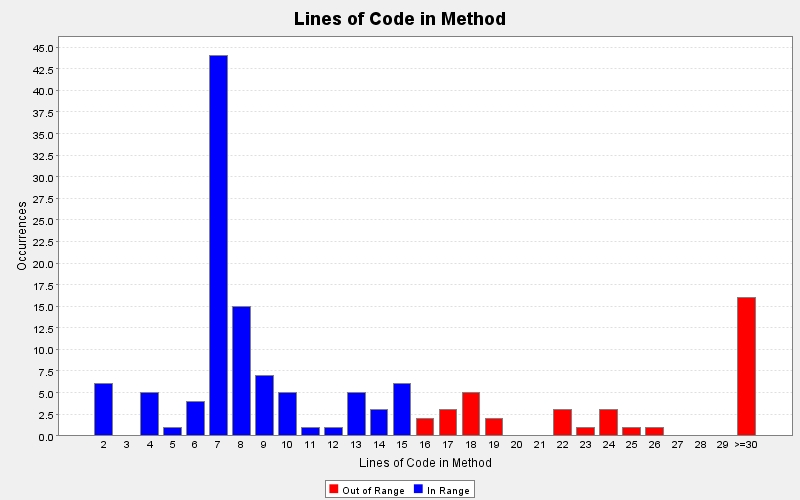

Produced by State Of Flow Eclipse Metrics on Sun Apr 14 20:24:37 EDT 2013
|  |
|
| CC | FE | LOCm | NLS | NOL | NOP | NOS | Line | Method | Type | Package |
|---|---|---|---|---|---|---|---|---|---|---|
| 1 | 0 | 7 | 0 | 1 | 0 | 2 | 62 | getSize() | Tweets | model |
| 1 | 0 | 7 | 0 | 1 | 0 | 1 | 37 | getTweets() | Tweets | model |
| 1 | 0 | 7 | 0 | 1 | 0 | 1 | 439 | getAllMessages() | TwitterModel | model |
| 1 | 0 | 7 | 0 | 1 | 0 | 1 | 209 | getDescription() | TwitterModel | model |
| 1 | 0 | 7 | 0 | 1 | 0 | 1 | 340 | getFollowers() | TwitterModel | model |
| 1 | 0 | 7 | 0 | 1 | 0 | 1 | 386 | getFollowersCount() | TwitterModel | model |
| 1 | 0 | 7 | 0 | 1 | 0 | 1 | 348 | getFollowing() | TwitterModel | model |
| 1 | 0 | 7 | 0 | 1 | 0 | 1 | 332 | getFriendsCount() | TwitterModel | model |
| 1 | 0 | 7 | 0 | 1 | 0 | 1 | 324 | getFriendsIDs() | TwitterModel | model |
| 1 | 0 | 7 | 0 | 1 | 0 | 1 | 423 | getHomeTimeline() | TwitterModel | model |
| 1 | 0 | 7 | 0 | 1 | 0 | 1 | 225 | getLocation() | TwitterModel | model |
| 1 | 0 | 7 | 0 | 1 | 0 | 1 | 177 | getName() | TwitterModel | model |
| 1 | 0 | 7 | 0 | 1 | 0 | 1 | 269 | getProfileBanner() | TwitterModel | model |
| 1 | 0 | 7 | 0 | 1 | 0 | 1 | 233 | getProfileImage() | TwitterModel | model |
| 1 | 0 | 7 | 0 | 1 | 0 | 1 | 185 | getScreenName() | TwitterModel | model |
| 1 | 0 | 7 | 0 | 1 | 0 | 1 | 241 | getSmallerProfileImage() | TwitterModel | model |
| 1 | 0 | 7 | 0 | 1 | 0 | 1 | 316 | getTweetCount() | TwitterModel | model |
| 1 | 0 | 7 | 0 | 1 | 0 | 1 | 217 | getURL() | TwitterModel | model |
| 1 | 0 | 7 | 0 | 1 | 0 | 1 | 431 | getUserTimeline() | TwitterModel | model |
| 1 | 0 | 7 | 0 | 1 | 0 | 2 | 39 | Users() | Users | model |
| 1 | 0 | 7 | 0 | 1 | 0 | 2 | 67 | getSize() | Users | model |
| 1 | 0 | 7 | 0 | 1 | 0 | 3 | 103 | showAll() | Users | model |
| 1 | - | 7 | 0 | 1 | 1 | 0 | 261 | main(java.lang.String[]) | TwitterGUI | view |
| 1 | 0 | 7 | 0 | 1 | 0 | 4 | 1301 | updateTweetCount() | TwitterGUI | view |
| 1 | 0 | 6 | 0 | 1 | 1 | 6 | 47 | getElementAt(int) | Users | model |
| 1 | 0 | 6 | 0 | 1 | 0 | 6 | 38 | displayName() | ControllerTest | test |
| 1 | 0 | 6 | 0 | 1 | 0 | 5 | 31 | setUp() | ControllerTest | test |
| 1 | 0 | 6 | 0 | 1 | 0 | 6 | 45 | twitterName() | ControllerTest | test |
| 1 | 0 | 5 | 0 | 1 | 1 | 0 | 489 | favoriteStatus(int) | TwitterController | controller |
| 1 | 0 | 4 | 0 | 1 | 1 | 2 | 64 | paintComponent(java.awt.Graphics) | LoadingPanel | view |
| 1 | 0 | 4 | 0 | 1 | 1 | 2 | 310 | paintComponent(java.awt.Graphics) | ProfilePanel | view |
| 1 | 0 | 4 | 0 | 1 | 1 | 1 | 295 | setFollowersCount(int) | ProfilePanel | view |
| 1 | 0 | 4 | 0 | 1 | 1 | 1 | 300 | setFollowingCount(int) | ProfilePanel | view |
| 1 | 0 | 4 | 0 | 1 | 1 | 1 | 305 | setTweetCount(int) | ProfilePanel | view |
| 1 | 0 | 2 | 0 | 1 | 1 | 0 | 1341 | keyPressed(java.awt.event.KeyEvent) | TwitterGUI | view |
| 1 | 0 | 2 | 0 | 1 | 1 | 0 | 1344 | keyReleased(java.awt.event.KeyEvent) | TwitterGUI | view |
| 1 | 0 | 2 | 0 | 1 | 1 | 0 | 1366 | mouseEntered(java.awt.event.MouseEvent) | TwitterGUI | view |
| 1 | 0 | 2 | 0 | 1 | 1 | 0 | 1369 | mouseExited(java.awt.event.MouseEvent) | TwitterGUI | view |
| 1 | 0 | 2 | 0 | 1 | 1 | 0 | 1372 | mousePressed(java.awt.event.MouseEvent) | TwitterGUI | view |
| 1 | 0 | 2 | 0 | 1 | 1 | 0 | 1375 | mouseReleased(java.awt.event.MouseEvent) | TwitterGUI | view |
| 1 | - | - | 0 | 1 | 1 | 1 | 27 | paintComponent(java.awt.Graphics) | GUITest$(anonymous) | test |
| 1 | 2 | - | 0 | 1 | 1 | 6 | 93 | paintComponent(java.awt.Graphics) | ProfilePanel$(anonymous) | view |
| 3 | 2 | - | 0 | 3 | 1 | 9 | 339 | actionPerformed(java.awt.event.ActionEvent) | TwitterGUI$(anonymous) | view |
| 4 | 0 | - | 1 | 3 | 1 | 10 | 353 | actionPerformed(java.awt.event.ActionEvent) | TwitterGUI$(anonymous) | view |
| 1 | 1 | - | 0 | 1 | 1 | 1 | 397 | paintComponent(java.awt.Graphics) | TwitterGUI$(anonymous) | view |
| 2 | 1 | - | 2 | 2 | 5 | 7 | 436 | getListCellRendererComponent(javax.swing.JList, java.lang.Object, int, boolean, boolean) | TwitterGUI$(anonymous) | view |
| 1 | 1 | - | 0 | 1 | 1 | 1 | 491 | paintComponent(java.awt.Graphics) | TwitterGUI$(anonymous) | view |
| 2 | 1 | - | 2 | 2 | 5 | 7 | 530 | getListCellRendererComponent(javax.swing.JList, java.lang.Object, int, boolean, boolean) | TwitterGUI$(anonymous) | view |
| 1 | 1 | - | 0 | 1 | 1 | 1 | 610 | paintComponent(java.awt.Graphics) | TwitterGUI$(anonymous) | view |
| 1 | 1 | - | 0 | 1 | 1 | 1 | 743 | paintComponent(java.awt.Graphics) | TwitterGUI$(anonymous) | view |
Produced by State Of Flow Eclipse Metrics on Sun Apr 14 20:24:37 EDT 2013